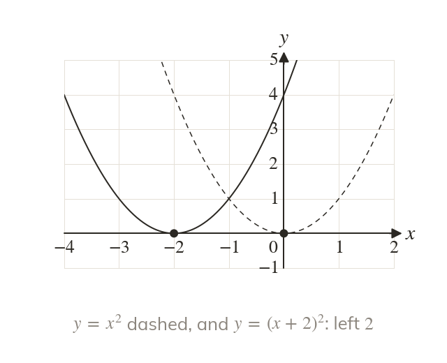
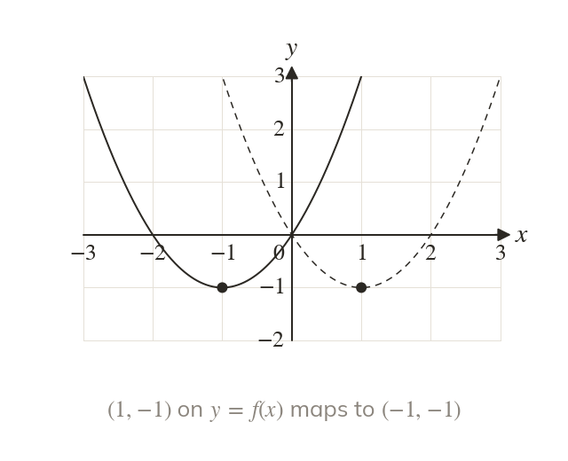
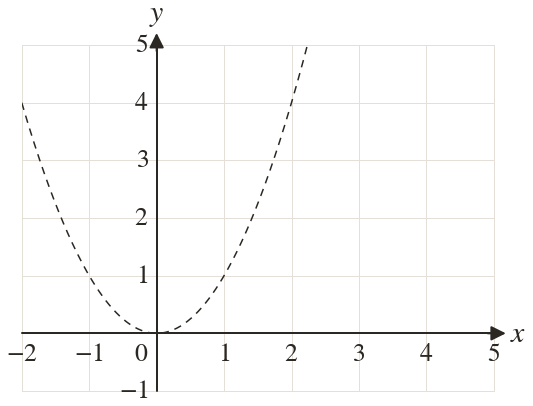
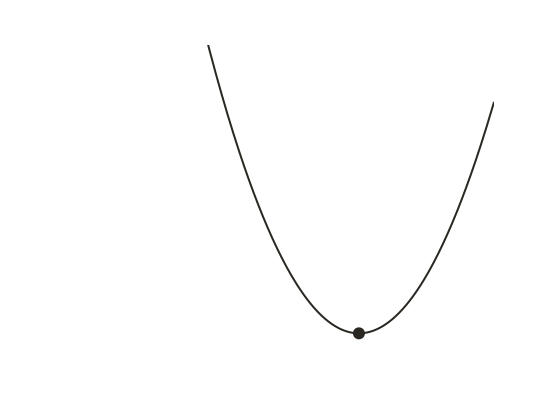
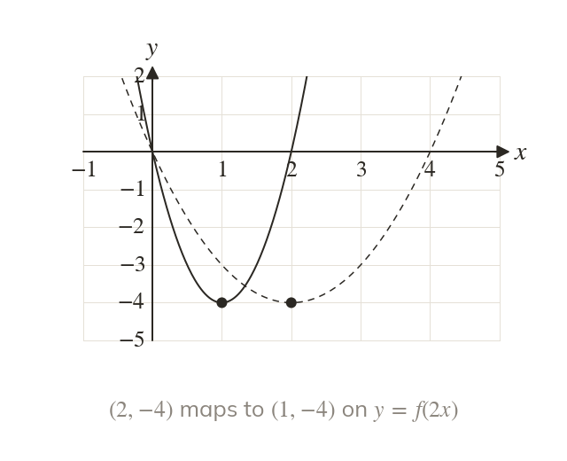
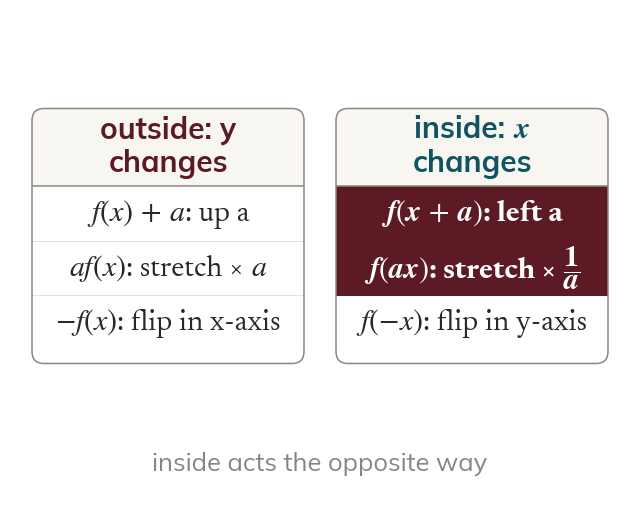

Inside acts on inputs
In every output is reached earlier. So the graph moves left against the sign.
A change inside the bracket acts on the input before the rule does, so the graph moves the opposite way to the sign. Today: horizontal translations, stretches and reflections, and how to tell all six transformations apart.
Work down the page at your own pace. Write every answer in your book first, then click to check it.
Read each card, then follow the worked examples one step at a time.

In every output is reached earlier. So the graph moves left against the sign.

In every input changes sign. So the graph is reflected in the y-axis.


Pick an answer. If it's wrong, the feedback tells you which mistake it was.
Read each card, then follow the worked examples one step at a time.

In every output is reached at half the input. So the graph is stretched horizontally, scale factor

Outside the bracket acts on y; inside acts on x, the opposite way. Adding translates, multiplying stretches, and a minus reflects.
Pick an answer. If it's wrong, the feedback tells you which mistake it was.
Finished? Next lesson: 11H.9.11 Combining Graph Transformations.
Log in, then search for a code to practise that skill.
Videos, worksheets and more on each part of this lesson.